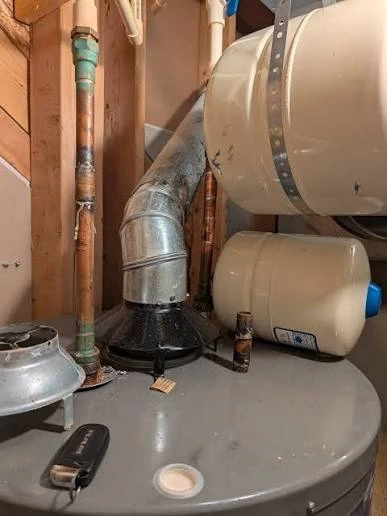
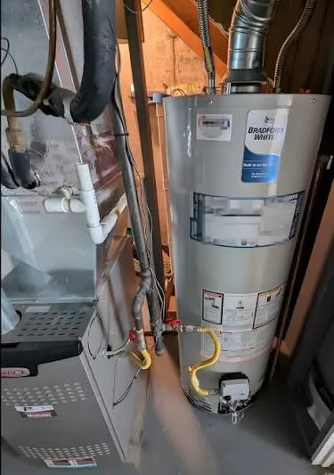

Water Heater Repair & Replacement in Downtown Nampa, ID
Downtown Nampa is the city's oldest neighborhood, with a housing stock that dates back to Nampa's railroad-era origins in the late 1800s and early 1900s. Many of these homes have been updated over the decades, but water heater infrastructure often lags behind—we regularly encounter units that are 15+ years old, installed in tight utility closets with original gas lines, and running on hard Canyon County water that was never properly managed.
The result is a neighborhood where emergency repair calls are more common than anywhere else in Nampa. When a water heater fails in a 1940s bungalow near 12th Avenue or a craftsman on 2nd Street South, the failure mode is often more complex than a simple part swap—corroded connections, undersized gas lines, and non-standard installations are part of the territory.

What Makes Downtown Nampa Water Heater Calls Different
Aging Infrastructure and Non-Standard Installations
Homes built before 1970 often have water heater installations that don't match modern code expectations. We find units tucked into closets with inadequate clearance, venting that was modified over the years, and gas connections that were never upgraded when the original unit was replaced. A technician who only works on new construction or suburban homes may not be prepared for what they find in a 1950s Downtown Nampa basement.
We work with technicians who are experienced with older installations—who know how to assess what's safe to repair versus what needs to be brought up to current code, and who can quote the full scope of work honestly before starting.
Hard Water Damage on Older Units
A water heater that's been operating in Nampa's hard water for 10+ years without regular maintenance has almost certainly accumulated significant sediment. In older units, this sediment can be so thick that it's acting as the primary thermal mass in the tank—the water is being heated by conduction through a layer of mineral scale rather than direct contact with the heating element or burner. This is inefficient, expensive to operate, and accelerates tank corrosion.
On units that are still worth saving, we can perform a thorough flush and sediment removal. On units that have been compromised by years of hard water damage, we'll tell you honestly that replacement is the better path.
Emergency Repair Response for Downtown Nampa
A water heater failure in a rental property near CWI or a multi-unit building on the downtown corridor is a different kind of emergency than a single-family home—tenants without hot water, potential liability, and the pressure to resolve quickly. We handle both residential and light commercial water heater emergencies in Downtown Nampa, with same-day availability in most cases.
Services Available in Downtown Nampa (ZIP 83651)
- Emergency water heater repair — gas and electric, same-day availability
- Pilot light and thermocouple service — common in older gas units throughout Downtown
- Sediment flush and hard water maintenance — critical for units in this area
- Full water heater replacement — old unit removal, new unit installation, permits
- Gas line assessment and upgrade — for older homes with undersized supply lines
- Code compliance review — seismic strapping, T&P valve, venting
Common Water Heater Issues in Downtown Nampa Homes
Based on the calls we receive from the 83651 zip code, these are the most frequent issues in Downtown Nampa:
- No hot water in older gas units (thermocouple failure, pilot light issues)
- Leaking tanks on units 12+ years old (corrosion from hard water)
- Rumbling and banging from heavy sediment accumulation
- Inadequate hot water supply in homes with original undersized units
- Pressure relief valve dripping (often from high system pressure in older plumbing)
- Corroded anode rods in units that have never been serviced
Serving All of Downtown Nampa's Neighborhoods
Our service area within Downtown Nampa includes the historic core near 12th Avenue South, the blocks surrounding the Nampa Civic Center and Lakeview Park, the Iowa Avenue corridor, and the residential streets between the downtown commercial district and the railroad tracks. We also serve adjacent areas including Northside Nampa and the Karcher neighborhood.
Other Areas We Serve Near Downtown Nampa
In addition to Downtown Nampa, we provide water heater service throughout Central Nampa and South Nampa. For a full list of neighborhoods served, see our service area overview.

Downtown Nampa Water Heater FAQs
Yes. Downtown Nampa's housing stock skews older than the rest of the city, and water heaters installed decades ago often lack current seismic strapping, have depleted anode rods, or were sized for a different-era household. We inspect for these specific issues on every Downtown Nampa service call, not just the immediate complaint.
Same-day service is available throughout the 83651 zip code, which covers all of Downtown Nampa. Call (208) 987-5152 and we'll work to get a technician to your door the same day.
Downtown Nampa falls within ZIP code 83651, along with the rest of Nampa's older central neighborhoods.
Yes. We regularly work on older Downtown Nampa homes with galvanized supply lines, undersized gas connections, or water heaters installed before current Idaho seismic strapping code — and we bring every installation up to current code as part of the job.